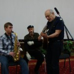
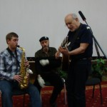
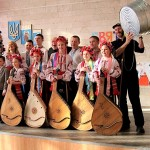
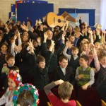

See photos of Peter Yarrow’s week in Ukraine and the launching of Operation Respect in Ukraine!
On the first day in Kiev, Peter played his first Ukrainian concert for new Peace Corps volunteers and Ukrainian teachers. Joined on stage by Peace Corps Ukraine Doug Teschner, Peter became an honorary Peace Corps volunteer.
 ]
] 
 

On December 18th, Operation Respect held a free concert at the Ukrainian House in Kiev. Peter Yarrow was joined by his children Christopher and Bethany, as well at Ukrainian artist Maria Burmaka.

Peter and Christopher Yarrow arrive at School Number 181 to sing and talk to the students of the school. Students from the school also performed for the group.
  

Bethany, Peter, and Christopher headed to Peace Corps Volunteer Mike Carlo’s school in Volodarsk-Volynskyi.


In addition to all of the music, Mark Weiss, Operation Respect Education Director arrived in Ukraine to hold a four day conference. The conference was for Peace Corps volunteers and Ukrainian educators from throughout the country.


 English
English Українська
Українська{kind=link}
{kind=link}
{kind=link}
{kind=link}
{kind=link}
{kind=link}
{kind=link}